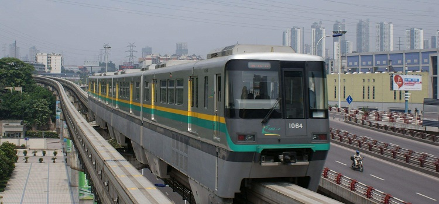

東京擁有世界上最為複雜的公共交通系統。公共交通系統以電車和地鐵等有軌電車為主，由十幾家不同公司運營。因此，東京的軌道交通線路和車站十分密集，換乘複雜，有多種不同類型的優惠票可以使用。
東京市區內的主要交通樞紐包括東京站、新宿站、池袋站、上野站、澀谷站等。出發前應事先做好功課，乘坐時盡量避開上下班高峰時期，一般終電時間在24:00前後。
東京的公交車和出租車屬於軌道交通的補足，其中公交車計費系統和報站方式不算方便，出租車價格昂貴，不是旅行者的首選。另外，東京停車昂貴，不推薦自駕前往。
不同類型交通
輕軌
東京市內的路面軌道交通稱為電車，主要由JR和私營電車組成。
JR（Japan Rail）原本是日本國營鐵路，因政府無法承擔長期虧損，將JR民營化，根據日本各個區域，分別成立了JR東日本、JR東海、JR西日本、JR北海道、JR九州、 JR四國等幾個民營公司，東京屬於JR東日本經營範圍
東京市內主要線路包括山手線、中央本線、總武線等，還有多條來往日本遠近郊區和衛星城的線路。

圖：東京市內的電車
網址：http://www.jreast.co.jp/
聯繫方式：+81-03-0180-993-900
#山手線#
綠色車廂的山手線是日本第1條環狀鐵路，連接了東京所有繁華地區。
重要車站：東京、新橋、品川、目黑、惠比壽、澀谷、原宿、新宿、池袋、上野、秋葉原
#中央本線#
橘黃色線條車廂的中央本線是從東京前往新宿的捷徑。
重要車站：東京、飯田橋、新宿、中野、吉祥寺、三鷹
私營電車主要起到補足東京市內交通和溝通部分鄰近區域的作用，其中前往台場地區的百合鷗線和臨海線十分常用。
#京王井之頭線#
網址：www.keio.co.jp
聯繫方式：+81-03-042-357-6161
重要車站：吉祥寺、京之頭公園、下北澤、澀谷
#東急東橫線#
網址：www.tokyu.co.jp
聯繫方式：+81-03-3477-0109
重要車站：澀谷、代官山、中目黑、自由之丘、橫濱
#百合鷗線 ゆりかもめ線#
網址：www.yurikamome.co.jp
聯繫方式：+81-03-3574-0821
重要車站：汐留、台場、青海、豐洲
#臨海線 りんかい線#
網址：www.twr.co.jp
聯繫方式：03-3527-7134
重要車站：大崎、東京テレポート、國際展示場
地鐵
共有13條路線，包括已有60年曆史的銀座線；二戰後開通的丸內線；年青人街、六本木及築地兩地來往的是日比谷線；東西線可達迪士尼樂園；另外有千代田線、有樂町線、半藏門線、淺草線、三田線、及新宿線等。銀座線為橙色，千代田線為綠色。
具體信息詳見東京地鐵官網網站：www.tokyometro.jp

圖：東京地鐵出入閘口
火車
東京火車站是日本陸上交通的總樞紐，擁有雄偉壯麗、色彩斑斕，仿自荷蘭阿姆斯特丹火車站的典雅建築外觀。
該火車站擁有18條JR線路、10條新幹線，以及東京地下鐵2條線路共15個月台數，每日的出發和到達列車數量約3,000列, 最能代表日本繁忙交通的車站。乘坐新幹線列車從東京到大阪需3小時左右，到橫濱需要1個半小時。
圖：東京火車
長途汽車
日本長途巴士一般都是傍晚出發早上到達，費用比飛機和新幹線便宜，座位是可調整的活動軟座，十分舒適。從東京乘坐長途公共汽車可以直達青森、秋田、仙台、新潟、長野、名古屋、金澤、京都、大阪、奈良、神戶、廣島、博德等城市和地區。
公共汽車
由於東京市內比較擁擠，利用巴士的人有限，而與電車線路相互重合的線路基本上都用來觀光。
連接銀座與台場這些超人氣景點的快速巴士每20-30分發車。此車由東京站出發，跨越彩虹大橋。由於採用座席定員制（45人），每位乘客都能坐著欣賞沿路美景。東京的巴士還有很多優惠，比如持有都營交通的一日乘車券則降價為100日元，乘車日若為生日則免費等等。
圖：東京市內公共汽車
行車路線：東京站丸之內南口-銀座4丁目-台場
營業時間：8:00-20:00，週六、日及節假日期間為9:00開始。
車票：成人300日元；兒童150日元（乘車時付款）
乘車地點：
（1）東京站丸之內南口旁（千代田區丸之內2-7附近）；
（2）地鐵銀座站A6出口旁（中央區銀座4-7附近）；
（3）百合鷗線台場站旁。
公交車有從前門上車和從後門上車的2種。巴士路線很複雜，應該乘車前查好到達目的地的路線。
除了一部分的例外，在東京都內23區內運行的大部分路線的乘車費是無論哪裡乘搭都可以同一費用到達終站。此種「從前門上車公交車」是, 從前門上車後在司機旁邊的付款箱內付費或將預付卡(Suica, PASMO)揮動或碰觸感應器，然後進入車廂內需要下車的時候, 只需要按下牆壁上的按鈴，等公交車到站停穩後，從後門下車。
相反，在東京都23區外運行的公交車是，從後門上車時收取車票，到達目的地，對照在司機頂上螢光幕顯示的車票號碼和您的車票號碼後付款下車。此種公交車被稱為「從後門上車公交車」。
注意事項：
乘坐「從前門上車公交車」式公交巴士時，把規定的車費放進箱子內即可。即使只有紙幣，沒有硬幣，也可使用紙幣道德通過車費箱旁的換錢機把紙幣換成硬幣，然後再把必須的硬幣放進車費箱內。換錢請在停車時進行。
都營公交巴士還出售一天乘車票（大人500日元，小孩250日元）。這是一天內可以隨便乘坐都營公交巴士的車卡。此外還有一天內可以隨便乘坐都營公交巴 士、都電和都營地鐵的一天乘車票（大人700日元，小孩350日元）
請向都內各首都公交巴士營業所、都電荒川線各站和都營地鐵各站垂詢。在公交巴士和都電車內也可買到當天的票。
出租車
起步價為710日元（2公里內），以後每300米加收90日元。 23:00至凌晨5:00的時間段內費用加收30%。中小型車出租車定員4人。日本出租車的後門為自動開關，乘客只需等駕駛員打開車門即可。
圖：東京出租車
車票
東京市內的交通線路錯綜複雜，電車、地鐵線路分別屬於不同的交通集團，國營、都營（市營）、私營等，每個集團都推出了自家的優惠套票，也有集團之間合作推出的實用交通票，可根據旅行需要選擇最合適的一種。下面推薦使用範圍較廣的幾種：
#東京1日自由車票#
適用範圍：東京都營地鐵、東京都電車（含多摩地區）、電車荒川線、日暮裡舍人線、東京地鐵（全線）、Jr（限東京都內），當天可以無限次使用。乘坐夜宵線巴士時，須付差價（成人200日元，兒童100日元）
票價：成人1,580日元、兒童790日元
有效期：車票出售後的6個月內有效，一旦開啟後，僅限當天使用有效（並非啟用後24小時）
#Suica 西瓜卡#
Suica並非優惠票，是一款能在首都圈（包括東京都、神奈川縣、千葉縣、埼玉縣等地）用於乘車、購物的儲值卡，日語發音與西瓜相同，愛稱西瓜卡。雖然沒有車費優惠，但乘車時不用再排隊買票，可節省不少時間（如果對東京交通系統不熟悉，光是辨識自動售票機的複雜線路圖就很費精力）。
Suica適用於東京市內幾乎所有的jr、地下鐵、私鐵、巴士線路，可以反复充值，在指定店鋪購物，非常方便。每張新購卡價格2,000日元，含1,500日元車費、500日元押金。
#Suica & N’ex#
包含一張Suica卡和成田特快N’ex車票的優惠套票。單程套票3500日元，有效期1日。往返套票5,500日元，有效期兩週。除了東京市區，N’ex最遠可到達橫濱地區，優惠幅度大。
#Suica & Monorail#
包含一張Suica卡和東京單軌電車（羽田機場—濱松町站）車票的優惠套票，如前往羽田機場，適合購買。單程套票2,400日元，有效期一天。往返套票2,700日元，有效期10天。方式，使用完畢後返還給乘客用於收藏，且該票種不可二次編碼。